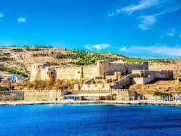
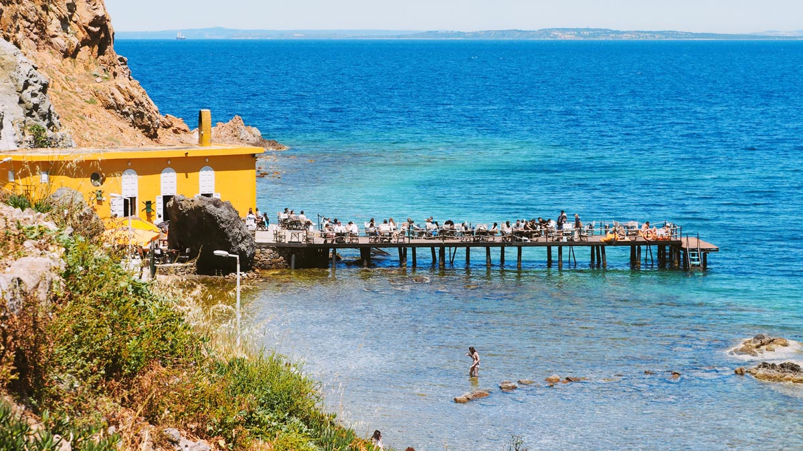

Bozcaada’da görülmesi gereken yerler listesi farklı güzellikleri ve ilgi alanlarını bir arada barındırır. Tarih severler bölgedeki müzeleri ve kiliseleri gezerken, deniz severler ise Bozcada plajlarını keşfe çıkarlar. Bozcaada, Rum Mahallesi gibi eşsiz yerleriyle de tatilcilerin ada sakinlerinin gündelik yaşantılarına dair bilgi sahibi olunabileceği yerlere sahiptir. Kültürel gezileri seven kişiler Bozcaada’daki farklı adresleri keşfederek tatillerinin her anını verimli geçirebilirler. Romantik veya ailecek geçirilecek eğlenceli bir tatil için Bozcaada’yı ve özel yerlerini görmek tatilcilerin aradıkları ambiyansı yakalamasını sağlayacaktır.
 